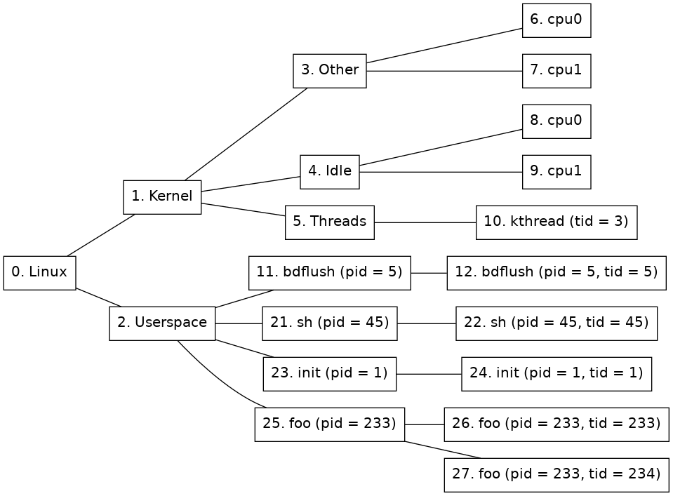

The Linux tracker tracks processes and threads in Linux.
When a processor runs an address that is considered to be in kernel space, processor nodes will be created under the Other node (see 2) and they will be set as active. Once the OS has come far enough in the boot process for the first processes to start, the tracker will consider the system booted and the Linux tracker will add nodes for processes and threads to form a tree like the one shown in figure 2.
This section describes how the Linux system is represented as a node tree. Figure 2 shows an example of the Linux node tree representation.

There are ten different kinds of nodes:
Kernel node
(Node 1 in figure 2.) This node represent the kernel half of Linux. Each processor currently executing in kernel space will be active on this node.
Other node
(Node 3 in figure 2.) This node is used to group activity that is not being represented by any of the other nodes. For example when a user space process does a system call.
Other node's child nodes
(Nodes 6 and 7 in figure 2.) For each processor that is available to the system a new node will be created here.
Threads node
(Node 5 in figure 2.) This node is used to group all kernel threads under one node. If a kernel thread is currently active, so will this node be.
Kernel thread nodes
(Node 10 in figure 2.) A new kernel thread node is created for each new kernel thread. When the task is terminated, the node is destroyed. When the kernel thread is executing, this node will be active. Thread nodes have the following extra properties in addition to the standard ones:
Idle node
(Node 4 in figure 2.) This node is used to group activity that is identified as the system being idle. If a processor is idling then this node will be active.
Idle node's child nodes
(Nodes 8 and 9 in figure 2.) For each processor that is available to the system a new node will be created here. It will be active when the processor is identified as being idle. This is approximated by the time when a swapper task is running on the specific processor.
Userspace node
(Node 2 in figure 2.) All processors executing in user-space will be active on this node.
Process nodes
(Nodes 11, 21, 23, and 25. in figure 2.) Immediately below the user-space node, there is one process node for each process in the system. A new process node is created for each new process, and when a process is terminated, its node is destroyed. Process nodes have the following extra properties in addition to the standard ones:
Process thread nodes
(Nodes 12, 22, 24, 26, and 27 in figure 2.) Immediately below each process node is one or more thread nodes representing the threads in the process. Just like the process nodes, these are created and destroyed on demand. Thread nodes have the following extra properties in addition to the standard ones:
The Linux tracker composition object includes some useful commands. Use the help command for a specific command to get more detailed information about that command.
detect-parameters
Detect parameters to be used by the Linux tracker. The system has to be booted for detection to succeed and for some systems kernel debug information must be provided in order for the tracker to be able to detect parameters. Use the -load flag to load the detected parameters directly and the param-file argument to save the parameters to disk.
simics> board.software.tracker.detect-parameters symbol-file=System.map -load param-file=detect.params
[board.software.tracker.tracker_obj info] Detecting settings using 1 processor(s)
[board.software.tracker.tracker_obj info] Failed to detect kernel module parameters
[board.software.tracker.tracker_obj info] Successfully detected parameters
Saved autodetected parameters to detect.params
load-parameters
Load configuration parameters for the Linux tracker from a file.
simics> board.software.tracker.load-parameters detect.params
save-parameters
Save the current configuration parameters to a file.
simics> board.software.tracker.save-parameters saved.params
supports-parameters
Check if a parameters file is supported by the Linux tracker.
simics> board.software.tracker.supports-parameters saved.params
Parameters of kind linux_tracker are supported by board.software.tracker
log-syscalls
Log system calls made by the Linux system.
simics> board.software.tracker.log-syscalls
simics> c
[board.software.tracker.mapper_obj info] Syscall: 'nanosleep' (35) on node 944 (board.mb.cpu0.core[0][0])
This section gives an overview of systems that are known to work for the Linux tracker. It has been tested on many systems in order to verify that it works using the Linux kernel versions listed in the figure 3. However, as it is dependent on specific kernel configuration it may not work for a given system even if the kernel version is the same. Even if a kernel version is not listed here as tested it might still work with the tracker.
The following keywords are used in figure 3 and figure 4:
| Arch | Version | Kernel threads |
| arcv2 | 4.2 | yes |
| arm32 | 2.6 | no |
| arm32 | 3.3 | no |
| arm64 | 5.0 | no |
| mips64 | 2.6 | yes |
| ppc32 | 2.6 | yes |
| ppc32 | 3.8 | yes |
| ppc64 | 2.6 | no |
| x86 | 2.6 | no |
| x86 | 3.7 | no |
| x86_64 | 2.6 | no |
| x86_64 | 4.18 | no |
| Arch | Version |
| arm32 | Wind River Linux 4.3 |
| ppc32 | Wind River Linux 3.0 |
| ppc32 | Wind River Linux 4.3 |
| ppc32 | Wind River Linux 5.0 |
| ppc64 | Wind River Linux 5.0 |
| x86 | Wind River Linux 4.3 |
| x86_64 | Wind River Linux 3.0 |
| x86_64 | Wind River Linux 4.0 |
| x86_64 | Wind River Linux 4.3 |
The Linux tracker will generate events (see section 2.6) when system calls are made in the target software. The name of the event will be "syscall". A system call notification can be registered in the following way:
notify_event(node_id, "syscall", recursive, syscall_cb, data)
The event_data argument of the callback will be a dictionary containing the system call number and name:
{'name': <name>, 'number': <number>}
The Linux tracker will try to translate the system call number into the system call name, such as fork or write, if no translation is available the name will be unknown.
The Linux tracker can be used to track which kernel modules are loaded and at what addresses their sections are loaded at. This information will then be provided to the debugger. This feature is only supported for x86-64 and arm64 architectures, but could potentially work for other architectures as well.
There is a <linux_tracker>.list-kernel-modules command on the Linux tracker object and the tracker composition object. This can be used to display all known modules and their sections. Use help on that command for options.
In order for kernel modules to be tracked, parameter detection (see 2.13.6) symbols have to be provided and must contain the 'modules' symbol. If plain symbols (usually kallsyms or System.map) are provided, then there must be at least one kernel modules inserted and live in order to be able to find kernel modules parameters. Also it is likely needed that at least one processor is running the kernel while performing the detection. If an ELF symbol file (usually vmlinux) with debug information is provided then kernel module parameters can be found without having to have any module currently loaded.
Kernel modules will be included by default in the parameters if found, but can be enforced to be found by using the kernel-modules argument to the <linux_tracker>.detect-parameters command and setting it to TRUE. Detection will then fail if kernel module parameters are not found. To leave out tracking kernel modules, instead set this argument to FALSE.
In order for the debugger to be able to find the kernel module binaries, the <linux_tracker>.set-kernel-module-path can be used. This should specify the base directory on the host where the kernel module binaries (with .ko extension) that should be debugged on the target system are located. That directory and it's sub-directories will be scanned for kernel modules and then they will be matched against modules found by the tracker. In order for modules to be matched with files under this path, the file must be named as the kernel module, with the exception that the file can have a dash (-) where the name has an underscore (_), and excluding the .ko suffix.
When the kernel module path is passed to the debugger it will apply any added path maps to the path, meaning that this can be re-mapped to another location using the debugger's add-pathmap-entry command.
Another way to debug one or a few kernel modules is to apply path maps for each kernel module name, to the matching kernel module .ko binary on disk. Something like:
add-pathmap-entry foo_module /tmp/kernel-build/modules/foo-module.ko
Kernel modules can usually not be found if the tracker is enabled while all processors are running outside of the kernel. When that occurs, finding the initial kernel modules will be postponed until a processor has entered the kernel and proper page tables are loaded.
The Linux tracker depends on its parameters file in order to know how to track the target software. If the target software is updated with a new or reconfigured kernel the parameters needs to be regenerated. This can be done with the detect-parameters command. In order for the parameters detection to work the Linux system must be booted. The detect-parameters command may also require some arguments in order to succeed with the detection, see the build-in help for further details. Use the -load flag to load the detected parameters directly.
If the system does not contain any OS Awareness software object at all, the system will have to be configured as described in section 2.9. After the OS Awareness object has been created, the Linux tracker composition objectcan be added with the insert-tracker command. The tracker argument should be the linux_tracker_comp module.
detect-parameters command can in rare cases take up to ten minutes to complete.finish_task_switch function. So no tasks will be found directly after a enable-tracker command, instead tasks will be found after that function has run.finish_task_switch symbol when detecting parameters._current_task symbol when detecting parameters.enable_vm_support attribute.RANDOMIZE_BASE kernel configuration option) are only supported for x86-64.